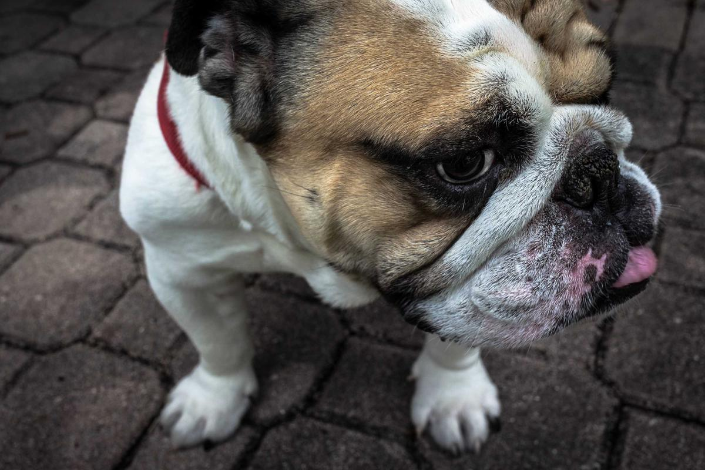

Diani Beach
Welcome to **Diani Beach**, where the ocean’s whispers meet the soul of Swahili paradise. Powdery white sands stretch endlessly, turquoise waters shimmer beneath the sun, and coconut palms sway like they’ve known music since birth.
Whether you’re diving among coral gardens, kitesurfing through sea breeze, or dining barefoot under starlight — Diani is Kenya’s coastal love letter to the world.



Hidden Gem: Galu Kinondo Marine Reserve 🪸
Just south of Diani lies a secret — Galu Kinondo. A marine sanctuary untouched by crowds, where sea turtles glide through coral kingdoms. Local fishermen sing at dawn, and mangroves dance with the tide. It’s Diani’s quiet masterpiece — nature’s luxury without walls.